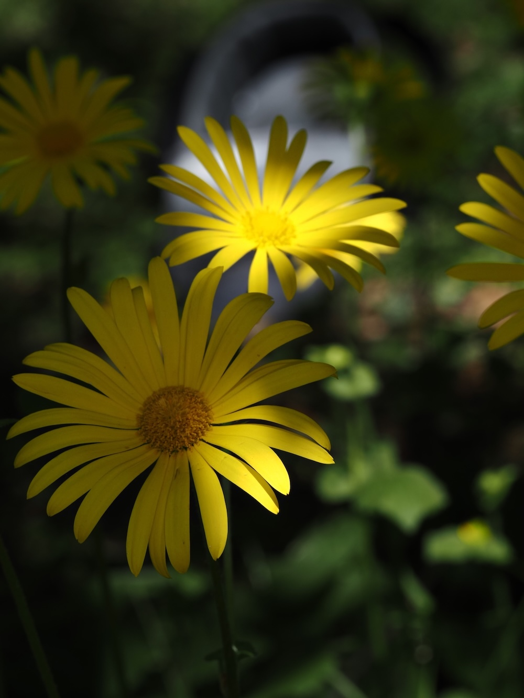
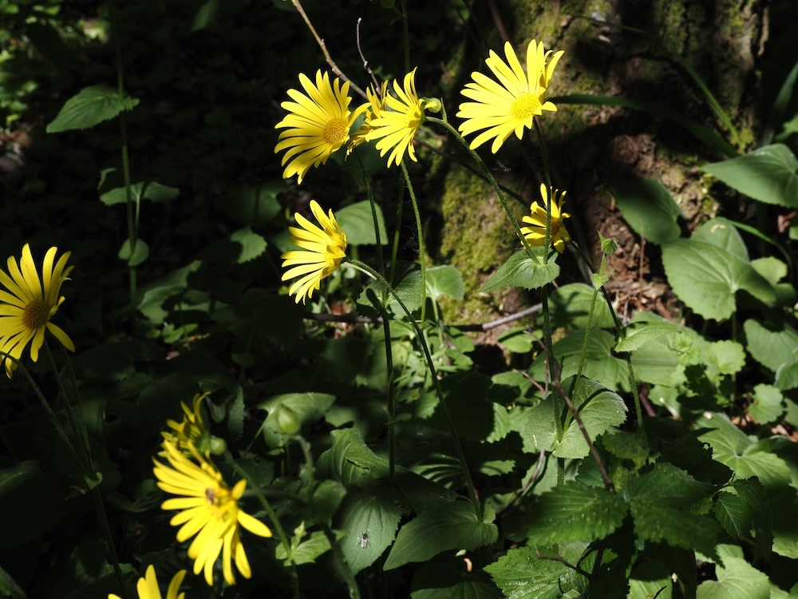

Frühlings-Sonnenscheibe im Halbschatten — mit dem Namen einer Gemse.



Eine giftige Schönheit
Der zweite Teil des lateinischen Namens — „pardalianches“ — kommt aus dem Griechischen und bedeutet „Pardertöter“ (Leopardentöter). Tatsächlich enthält die Pflanze giftige Pyrrolizidinalkaloide, und in der Antike soll sie zum Vergiften von wilden Tieren verwendet worden sein. Heute ist sie nur eine schöne Frühlingspflanze — aber der Name hat seinen Schauer behalten.
Aus dem Süden eingewandert
Doronicum pardalianches stammt eigentlich aus den Bergen Süd- und Mitteleuropas und wurde im 16. Jahrhundert als Gartenpflanze nach Mitteleuropa gebracht. Heute ist sie verwildert und in vielen Wäldern eingebürgert — oft an alten Burgmauern oder in der Nähe ehemaliger Klostergärten. Wer sie findet, schaut wahrscheinlich auf einen historischen Standort.
Wissenswertes & Merksätze
Erkennen leicht gemacht
Aufrechter, behaarter Stängel mit herzförmigen, lang gestielten Grundblättern. Stängelblätter umfassen den Stängel mit pfeilförmigen Öhrchen. Blütenkörbchen einzeln, groß (4–6 cm), goldgelb, sieht aus wie eine kleine Sonne.
Vorsicht mit Wildtieren
Wenn man die Pflanze im Garten hat: nicht in Reichweite von Pferden, Schafen oder Kindern. Sie ist nicht akut tödlich, aber alle Pflanzenteile enthalten leberschädigende Stoffe.